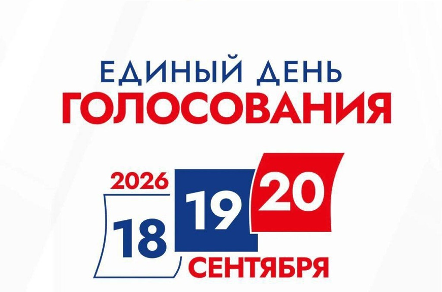
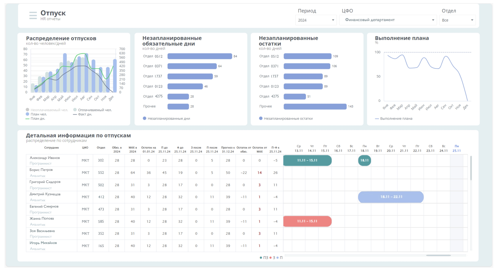
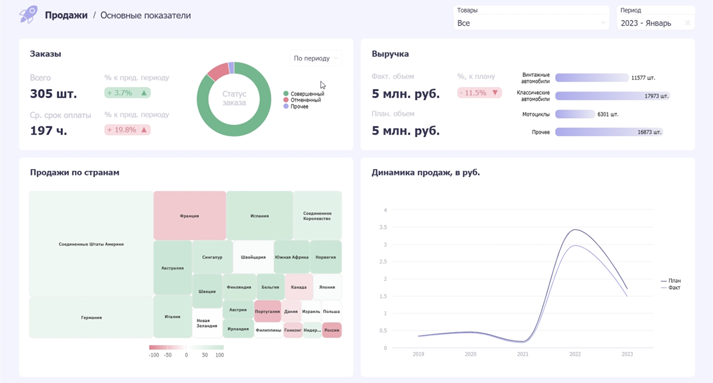
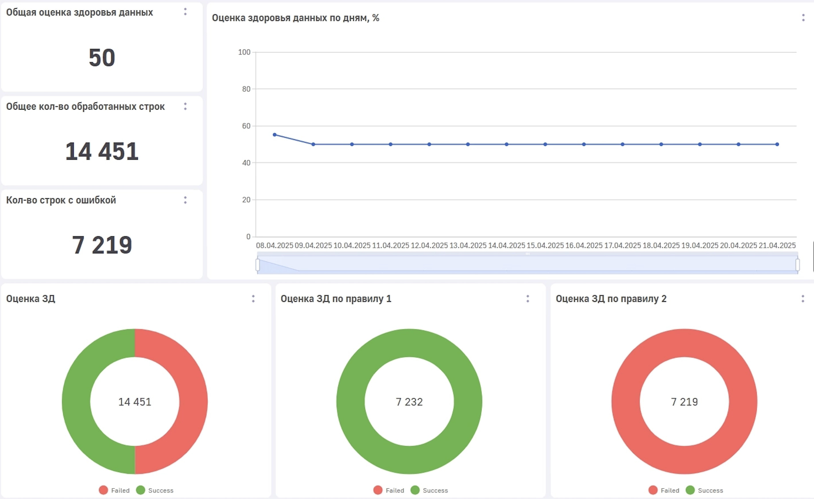
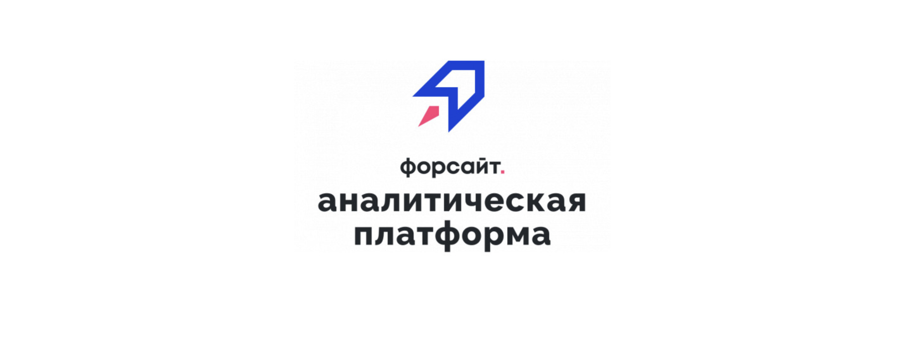
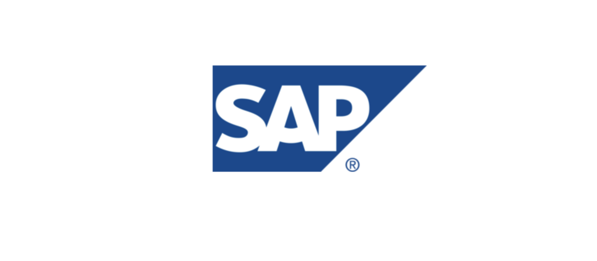

BI Аналитик · BI Разработчик
Обо мне
BI аналитик с опытом построения аналитических систем и дашбордов для HR и бизнеса в крупных компаниях. Специализируюсь на разработке и автоматизации BI отчетности, регламентных отчетов, построении витрин данных и аналитике на основе SQL и BI-систем. Имею опыт самостоятельной реализации проектов end-to-end: от сбора требований до внедрения и поддержки.
Ключевые компетенции
- BI-платформы: Visiology, Insight BI, LuxMS BI, Форсайт, SAP BI
- BI-разработка: создание интерактивных дашбордов, настройка визуализаций, фильтрации, drill-down и навигации
- Frontend: JavaScript, HTML, CSS, кастомизация виджетов и адаптивных интерфейсов
- SQL: сложные запросы, CTE, оконные функции, агрегации (PostgreSQL, Dremio)
- Оптимизация BI-решений: рефакторинг компонентов, сокращение количества запросов, повышение производительности дашбордов
- Работа с данными: проектирование витрин данных, основы DWH и ETL, контроль качества и корректности метрик
- Сбор и формализация требований: взаимодействие с бизнесом, системными аналитиками, дата-инженерами и разработчиками
- Техническая документация: подготовка технических заданий и спецификаций на BI-компоненты и доработки
- Python: опыт написания вспомогательных скриптов для автоматизации
Образование
РГУ им. А.Н. Косыгина
-
Бакалавриат (2016–2020)
Информатика и вычислительная техника -
Магистратура (2020–2022)
Информационные системы и технологии
Дополнительное обучение
Вендорские курсы BI-платформ (Visiology, TURBO, SAP)
Опыт работы
BI Аналитик · BI Разработчик
ДИТ Москвы
2026
- Разработка и развитие BI-дашбордов на платформе Insight BI
- Кастомизация визуализаций и интерфейсов (JS, HTML, CSS)
- Реализация адаптивных интерфейсов для различных устройств и разрешений экранов
- Оптимизация производительности дашбордов: рефакторинг компонентов, сокращение количества запросов к витринам
- Участие в проектировании витрин данных, проверке корректности показателей и тестировании BI-решений
- Подготовка технических заданий для frontend-разработчиков, системных аналитиков и дата-инженеров
BI Аналитик · BI Разработчик · BI Консультант
АО «РАМАКС Интернейшнл» (Москва)
2021–2025
- Разработка и развитие BI-решений для бизнеса
- Сбор требований от заказчиков, формирование аналитических гипотез
- Проектирование моделей данных и витрин в БД
- Автоматизация отчетности и снижение доли ручных операций
- Участие в пресейлах и демонстрации аналитических решений
Проектный опыт

Выборы 2026
Роль: BI-аналитик / BI-разработчик
Инструмент: Insight BI / LuxMS BI
Разработка интерактивных BI-дашбордов полного цикла: кастомизация визуализаций , реализация сложной логики взаимодействия с данными и оптимизация производительности.
Мостуризм
Роль: BI-аналитик / BI-разработчик
Инструмент: Insight BI
Разработка адаптивного аналитического дашборда для мониторинга туристических потоков: проектирование интерфейса, подготовка требований к витринам данных и интеграция данных в BI-компоненты.

HR-аналитическая система
Роль: BI-аналитик / BI-разработчик
Инструмент: Visiology v3
Разработка HR-аналитической системы для мониторинга показателей и представления кадровых данных в интерактивных дашбордах.

Демонстрационные проекты
Роль: BI-аналитик / BI-разработчик
Инструмент: Visiology v2
Подготовка демонстрационных BI-решений для презентации возможностей платформы и поддержки пресейловых активностей.

Мониторинг здоровья данных
Роль: BI-аналитик / BI-разработчик
Инструмент: LuxMS BI
Разработка BI-инструмента для мониторинга качества данных, выявления отклонений и контроля состояния информационных систем.

Разработка регламентных отчетов
Роль: BI-аналитик / BI-разработчик
Инструмент: Форсайт АП
Разработка и настройка регламентной отчетности с использованием платформы «Форсайт. Аналитическая платформа».

Поддержка и развитие отчётности
Роль: BI-консультант
Инструменты: SAP BW / BO
Поддержка существующих отчетов, сопровождение аналитических решений и развитие корпоративной отчетности.